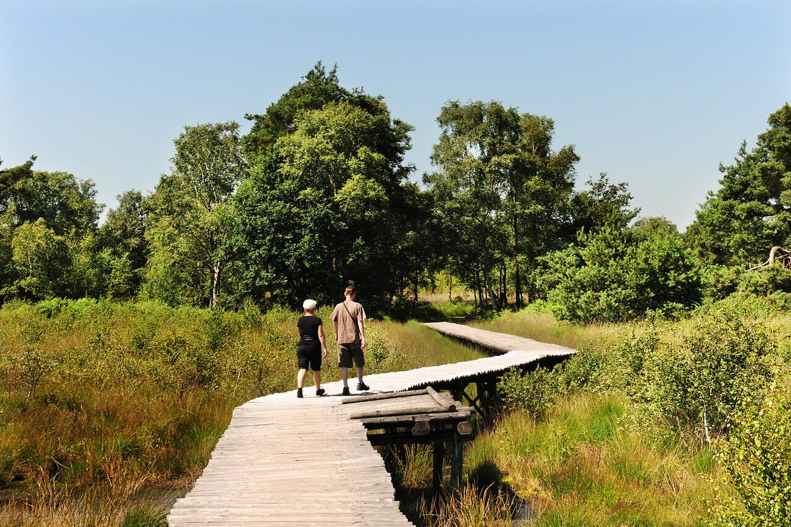
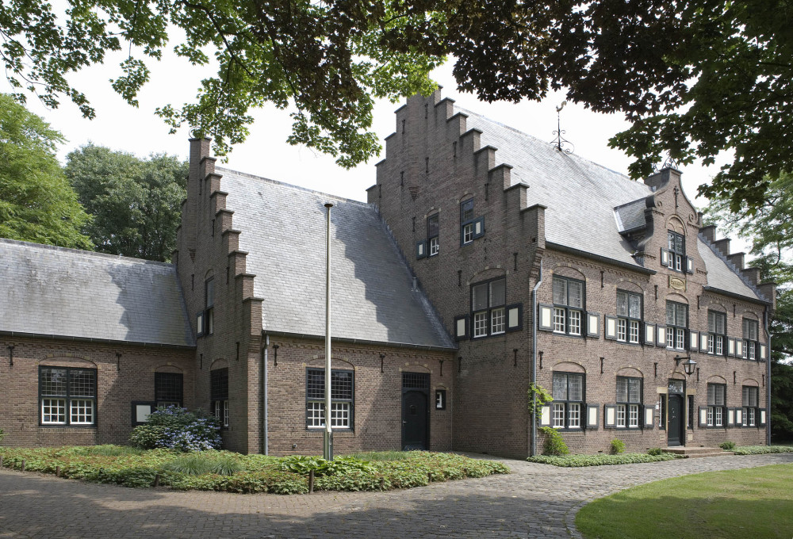

Deurne is heel groot
Groter dan Lommel
In Deurne vind je de Peel
Deurne bestaat al 1300 jaar
In Deurne ligt museum de Wieger
 Het hoogveen is ontstaan op de tamelijk vlakke waterscheiding van een zanderige vlakte. Het veen bevond zich voornamelijk op de Peelhorst. Een horst is een geologisch verschijnsel met ondoordringbare kleilagen op relatief geringe diepte, waardoor regenwater niet door de bodem naar het grondwater kan doorsijpelen.
 Deurne geniet landelijke bekendheid door museum De Wieger, ooit het woonhuis van de schilderende arts Hendrik Wiegersma. Wiegersma was een legende. Hij was huisarts in Deurne in de Peel en had vijf zonen. Een van die zonen was Friso, een partner van Wim Sonneveld. Hij schreef voor hem het liedje ‘Het Dorp’ naar een liedje van Jean Ferrat (La Montagne) met herinneringen aan zijn verloren jeugd ('het tuinpad van mijn vader').